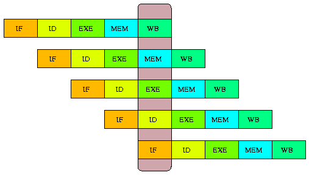
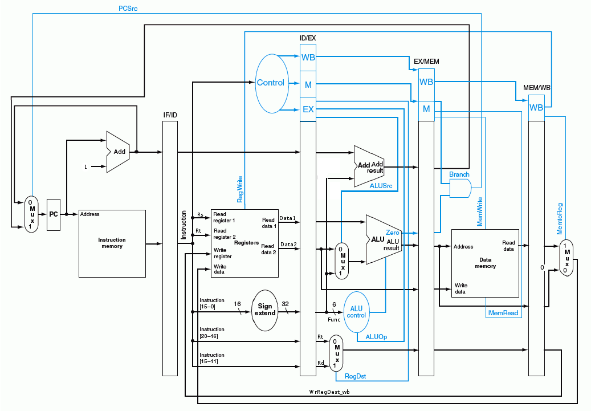
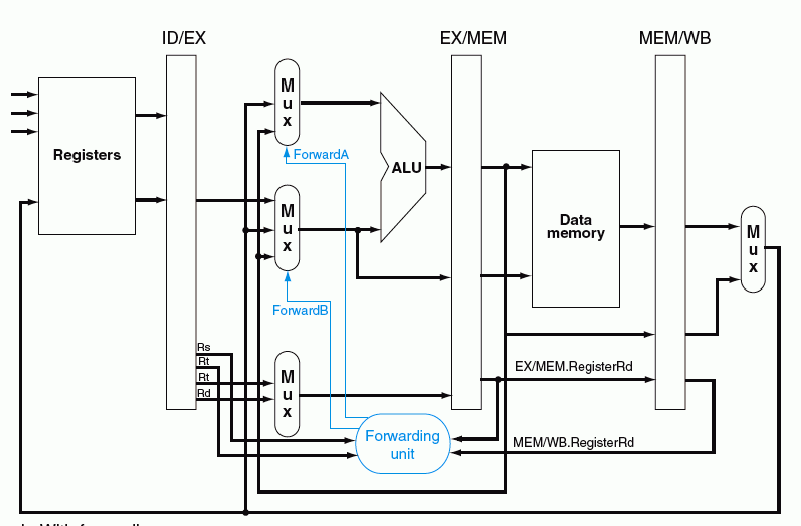
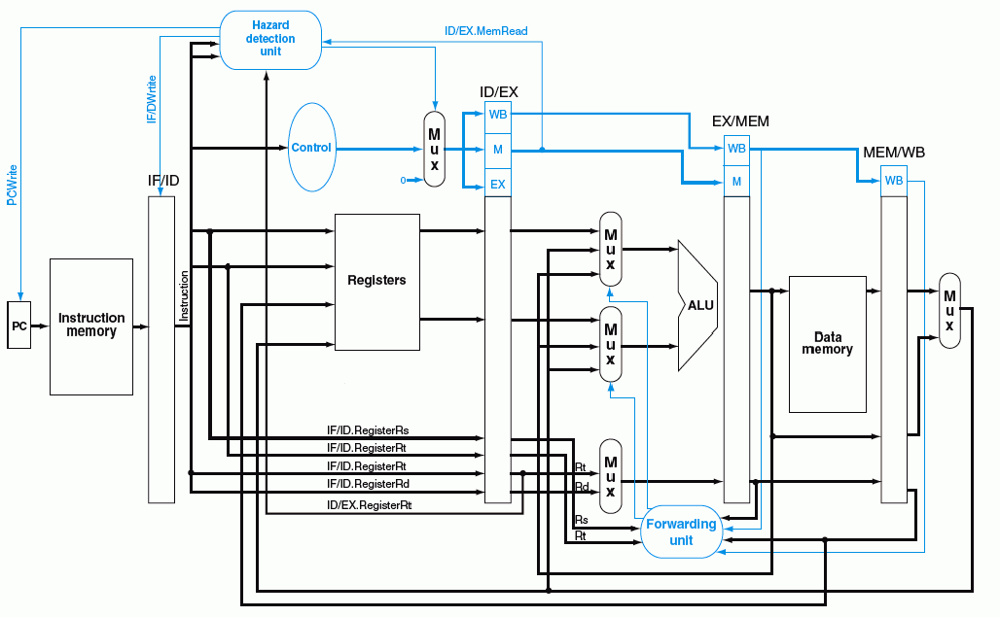

Introducción¶
En este trabajo se implementa y verifica un procesador DLX utilizando el lenguaje de programación Python mediante el uso del paquete MyHDL. El proyecto se ha llamado PyMIPS.
El DLX es básicamente un procesador MIPS revisado y simplificado con una arquitectura RISC de 32 bits y un pipeline de 5 etapas. (ver Segmentación ). Ha sido pensado principalmente para propósitos educativos, y se utiliza ampliamente en cursos de nivel universitario sobre arquitectura de computadoras.
El desarrollo de este trabajo ha sido guiado principalmente por el libro “Computer Organization and Design” [Patterson-Hennessy2005], escrito por David Patterson y John Hennessy, diseñadores originales del procesador DLX.
El código fuente, la documentación y la visualización de la historia de desarrollo puede encontrarse en el sitio web http://github.com/nqnwebs/pymips. El trabajo ha sido liberado bajo licencia GNU GPL v3.0 [1] .
Lenguaje de implementación¶
Python es un lenguaje de programación de alto nivel cuya filosofía hace hincapié en una sintáxis clara y legible.
Se trata de un lenguaje de programación multiparadigma ya que soporta orientación a objetos, programación imperativa y funcional. Es un lenguaje interpretado, usa tipado dinámico, es fuertemente tipado y es multiplataforma.
MyHDL es un paquete (un conjunto de módulos y funciones Python) que permite utilizar la potencia de alto nivel de Python en reemplazo de un lenguaje de descripción de hardware tradicional. Más aun, con algunas restricciones menores, el código Python-MyHDL es convertible a VHDL o Verilog automáticamente. Puede verse un detalle de característicsa y ejemplos en el manual de usuario [MyHDLDoc].
También es posible generar un archivo de descripción de forma de onda de las señales (archivos .vcd) implicadas en un determinado diseño.
Es importante destacar que MyHDL permite valerse de la potencia de Python como lenguaje de alto nivel, pero sin salirse del scope de la descripción de hardware. Por ello, muchos conceptos son comunes (señales, bus, bits, enteros con y sin signo, testbench, etc) así como las técnicas de modelado (estructural, comportamental, etc.). Semánticamente es muy similar a Verilog, aunque la posibilidad de instrospección de Python permite automatizar e inferir aspectos, por ejemplo, el comportamiento de los puertos (se detecta si es un puerto de entrada o salida).
En el artículo [WhyMyHDL] se detallan muchas ventajas de su uso. Entre ellas se destacan:
- Facilidad de uso: Python es mucho más fácil de aprender que VHDL o Verilog
- Uso de técnicas modernas de desarrollo de software aplicadas al diseño de hardware: por ejemplo, pruebas unitarias, y la metodológia asociada “test-driven development”
- Unificar diseño algoritmico y descripción de hardware
- Centralizar el desarrollo cuando hay que codificar lo mismo en VHDL y Verilog
- y mucho más...
| [1] | http://www.gnu.org/licenses/gpl.html |
Arquitectura¶
Segmentación¶
El interior del procesador DLX está segmentado en cinco etapas de pipeline y en cada una de ellas se realizarán las operaciones de las tareas en el ciclo normal de una instrucción, es decir, búsqueda de la instrucción (identificado con el bloque IF), decodificación de la instrucción (identificado con el bloque ID), ejecución de la operación (identificado con el bloque EX), acceso a memoria (identificado con el bloque MEM) y almacenamiento del resultado de la operación (identificado con el bloque WB).

La ejecución de las instrucciones se superponen en el tiempo de la siguiente manera:

Implementación¶
El desarrollo de PyMIPS ha sido realizado iterativa e incrementalmente. En una primera estapa se codificó y verificó cada uno de los componentes internos del procesador. Luego, a nivel estructural, se instanciaron y conectaron estos componentes (mediante señales internas) en una versión sin pipeline, (Datapath), una versión con pipeline pero sin control de hazards (Pipeline), y la versión definitiva con segmentación y control de hazards, mediante forwarding y detección de saltos (DLX).
La codificación de cada componente respeta las restricciones RTL de MyHDL para ser convertible a lenguajes HDL sintetizables. En particular, para una una comparación, se incluye el resultado de conversión automática a VHDL estándar.
Todos estos componentes han sido verificados y simulados mediante testbenchs y/o unittests. Ambas técnicas permiten conectar señales a los puertos de entrada y salida del componte y observar su comportamiento en función de distintos estímulos que se generan. La diferencia radica en que los unittest, herramienta incluída en lenguajes orientados a objetos como Java y C++ y parte neurálgica de modelos de desarrollo ágiles, permiten la verificación automática comparando el estado de una señal en un determinado momento con un el valor esperado para esa condición.
Esta automatización, en contraste con la inspección manual mediante el dump de forma de onda o la impresión por pantalla, permite una verificación mucho más fiable y rápida.
Convenciones de códificación¶
Sobre todo en las implementación a nivel estructural (las distintas versiones del procesador) la cantidad de señales internas e instancias de componentes es grande. Para facilitar la diferenciación semántica de cada objeto se definió la siguiente convención:
- La señales se definen en CamelCase
- La instancias de componente se escriben como under_score_ (con un _ al final)
- La señales que se comparten por dos o más etapas (que atraviesan un latch) tiene como sufijo la etapa de pipeline a la que pertenencen. Por ejemplo: PcAdderO_if, que se encuentra antes del latch IF/ID es la misma señal que PcAdderO_id después del latch.
Componentes¶
Program Counter¶
El contador de programa funciona como un latch. Cuando llega el flanco de clock (descendiente), el valor del puerto de salida se actualiza con el valor del puerto de entrada en ese instante.
def program_counter(clk, input, output, stall=Signal(intbv(0)[1:])):
"""
clk : clock signal
input: the input count
output: address output
"""
@always(clk.negedge)
def update():
if not stall:
output.next = input
return update
Luego de la conversión a VHDL, el código generado es el siguiente
entity program_counter is
port (
clk: in unsigned(0 downto 0);
input: in unsigned(4 downto 0);
output: out unsigned(4 downto 0)
);
end entity program_counter;
architecture MyHDL of program_counter is
signal state: unsigned(31 downto 0);
begin
PROGRAM_COUNTER_UP_OUT: process (clk) is
begin
if rising_edge(clk) then
output <= resize(state, 5);
end if;
end process PROGRAM_COUNTER_UP_OUT;
PROGRAM_COUNTER_UP_STATE: process (clk) is
begin
if falling_edge(clk) then
state <= resize(input, 32);
end if;
end process PROGRAM_COUNTER_UP_STATE;
end architecture MyHDL;
Para la verificación se realizó el siguiente TestBench que emula el uso en el contexto real donde el valor de salida (el contador) se incremeta a traves de un sumador
def testbench():
clk = Signal(intbv(0)[1:])
i = Signal(intbv(0, min=0, max=32))
o = Signal(intbv(0, min=0, max=32))
clkdriver_inst = clock_driver(clk)
pc_inst = program_counter( clk, i, o)
c = Signal(0b0010)
alu_i = ALU( c, o, Signal(1), i, Signal(0))
@instance
def stimulus():
while True:
yield delay(1)
print "time: %s | Clock: %i | in: %i | out: %i" % (now(), clk, i, o)
return instances()
El resultado es el siguiente:
time: 1 | Clock: 0 | in: 1 | out: 0
time: 2 | Clock: 1 | in: 1 | out: 0
time: 3 | Clock: 0 | in: 2 | out: 1
time: 4 | Clock: 1 | in: 2 | out: 1
time: 5 | Clock: 0 | in: 3 | out: 2
time: 6 | Clock: 1 | in: 3 | out: 2
time: 7 | Clock: 0 | in: 4 | out: 3
time: 8 | Clock: 1 | in: 4 | out: 3
time: 9 | Clock: 0 | in: 5 | out: 4
time: 10 | Clock: 1 | in: 5 | out: 4
time: 11 | Clock: 0 | in: 6 | out: 5
time: 12 | Clock: 1 | in: 6 | out: 5
time: 13 | Clock: 0 | in: 7 | out: 6
time: 14 | Clock: 1 | in: 7 | out: 6
time: 15 | Clock: 0 | in: 8 | out: 7
time: 16 | Clock: 1 | in: 8 | out: 7
time: 17 | Clock: 0 | in: 9 | out: 8
time: 18 | Clock: 1 | in: 9 | out: 8
time: 19 | Clock: 0 | in: 10 | out: 9
time: 20 | Clock: 1 | in: 10 | out: 9
Instruction Memory¶
Una de las características de la arquitectura Hardvard del DLX es la separación de la memoria de programa de la memoria de datos. La memoria de programas funciona como una memoria ROM. En particular el diseño implementado distribuye la memoria en bancos de 32 bits en vez de bytes. Esto tiene implicancia en que el incremento entre una instrucción y otra es de 1 en 1, en vez de ser de 4 como utiliza el diseño de la bibliografía.
Cuando llega un flanco descendiente en el clock, el dato guardado en la dirección de memoria de entrada se asigna a la salida.
def instruction_memory(address, instruction):
"""
address -- the pointer defined by PC
instruction -- 32 bit encoded instruction
"""
@always_comb
def logic():
instruction.next = ROM[int(address)]
return logic
Por simplicidad, no se incluye el código autogenerado de la conversión a VHDL, pero como para todos los componentes, puede encontrarse en la carpeta * ./vhdl *
Para cargar de información la memoria ROM, se escribió una pequeña función que lee un archivo de texto, considerando el token # como el inicio de un cometario. Además, no se consideran los espacios, de manera que el resultado es un número binario de 32 digitos (una instrucción de programa).
def load_program(ROM, program='/home/tin/facu/arq/project/prog.txt', comment_char='#' ):
index = 0
for line in open(program):
line = line.partition(comment_char)[0]
line = line.replace(' ', '')
if len(line) == 32:
ROM[index] = int(line, 2)
index += 1
return tuple(ROM)
El testbench lee las 8 primeras posiciones:
def testBench():
I = Signal(intbv(0, min=0, max=16))
O = Signal(intbv(0)[32:])
#pd_instance = prime_detector(E, S)
im_instance = toVHDL(instruction_memory, I, O)
@instance
def stimulus():
for i in range(8):
I.next = intbv(i)
yield delay(10)
print "address: " + bin(I, 4) + " (" + str(I) + ") | instruction: " + bin(O, 32)
return instances()
cuyo resultado es el siguiente:
address: 0000 (0) | instruction: 00000000010000110000100000100000
address: 0001 (1) | instruction: 00000000001001000000000000100010
address: 0010 (2) | instruction: 10101100001000100000000000000101
address: 0011 (3) | instruction: 10001100001000000000000000000101
address: 0100 (4) | instruction: 00000000000000000000000000000000
address: 0101 (5) | instruction: 00000000000000000000000000000000
address: 0110 (6) | instruction: 00000000000000000000000000000000
address: 0111 (7) | instruction: 00000000000000000000000000000000
Instruction Decoder¶
En los 32 bits de instrucción se codifican distintas informaciones: opcode, función, registro source, target y destiny, etc. Para realizar esta separación se implementó un simple decodificador combinacional.
def instruction_dec(instruction, opcode, rs, rt, rd, shamt, func, address, NopSignal=Signal(intbv(0)[1:]) ):
"""
Decode segments of 32bits encoded instruction
instruction: 32 bits
rs = Signal(intbv(0)[5:]) #instruction 25:21 - to read_reg_1
rt = Signal(intbv(0)[5:]) #instruction 20:16 - to read_reg_2 and mux controlled by RegDst
rd = Signal(intbv(0)[5:]) #instruction 15:11 - to the mux controlled by RegDst
shamt = Signal(intbv(0)[5:]) #instruction 10:6 -
func = Signal(intbv(0)[6:]) #instruction 5:0 - to ALUCtrl
address = Signal(intbv(0)[16:]) #instruction 15:0 - to Sign Extend
"""
@always_comb
def decode():
opcode.next = instruction[32:26]
rs.next = instruction[26:21] #- to read_reg_1
rt.next = instruction[21:16] #- to read_reg_2 and mux controlled by RegDst
rd.next = instruction[16:11] #- to the mux controlled by RegDst
shamt.next = instruction[11:6]
func.next = instruction[6:0] #- to ALUCtrl
address.next = instruction[16:0].signed() #- to Sign Extend
if instruction == 0:
NopSignal.next = 1
else:
NopSignal.next = 0
return decode
Unidad de control¶
La unidad de control es un componente combinacional que activa flags, en general para el control de multiplexores u otras unidades de control secundarias. Cumple la siguiente tabla de verdad:

Para satisfacer la detección de nop (instrucción 0x00000) se incorporó como entrada una señal detectada en ID, que es 1 si toda la instrucción es 0. En tal caso , la unidad de control pone todas sus salidas a 0.
La modificación se debe a que el opcode 00000 es común para las instrucciones R-type y algunas señales de control se ponen a 1 causando efectos no deseados como la escritura en el banco de registros.
El código de implementación es el siguiente
def control(opcode, RegDst, Branch, MemRead, MemtoReg, ALUop,
MemWrite, ALUSrc, RegWrite, NopSignal=Signal(intbv(0)[1:]), Stall=Signal(intbv(0)[1:])):
"""
opcode -- 6bit opcode field from instruction
RegDst, ALUSrc, MemtoReg -- 1bit signals to control multiplexors
RegWrite, MemRead, MemWrite -- 1bit signals to control reads and writes
in registers and memory
Branch -- 1bit signal to determining whether to possibly branch
ALUop -- 2bit control signal for the ALU
"""
@always_comb
def logic():
if NopSignal == 1 or Stall == 1:
RegDst.next = 0
ALUSrc.next = 0
MemtoReg.next = 0
RegWrite.next = 0
MemRead.next = 0
MemWrite.next = 0
Branch.next = 0
ALUop.next = intbv('00')
else:
if opcode == 0: #r-format
RegDst.next = 1
ALUSrc.next = 0
MemtoReg.next = 0
RegWrite.next = 1
MemRead.next = 0
MemWrite.next = 0
Branch.next = 0
ALUop.next = intbv('10')
elif opcode == 0x23: #lw
RegDst.next = 0
ALUSrc.next = 1
MemtoReg.next = 1
RegWrite.next = 1
MemRead.next = 1
MemWrite.next = 0
Branch.next = 0
ALUop.next = intbv('00')
elif opcode == 0x2b: #sw
ALUSrc.next = 1
RegWrite.next = 0
MemRead.next = 0
MemWrite.next = 1
Branch.next = 0
ALUop.next = intbv('00')
elif opcode == 0x04: #beq
ALUSrc.next = 0
RegWrite.next = 0
MemRead.next = 0
MemWrite.next = 0
Branch.next = 1
ALUop.next = intbv('01')
return logic
El testbench desarrollado itera sobre distintas entradas de opcode:
def testBench():
signal_1bit = [Signal(intbv(0)[1:]) for i in range(7)]
RegDst, ALUSrc, MemtoReg, RegWrite, MemRead, MemWrite, Branch = signal_1bit
ALUop = Signal(intbv(0)[2:])
opcode = Signal(intbv(0)[6:])
control_inst = toVHDL(control, opcode, RegDst, Branch, MemRead, MemtoReg, ALUop, MemWrite, ALUSrc, RegWrite)
@instance
def stimulus():
for op_value in [0, int('100011', 2), int('101011', 2), int('000100', 2)]:
opcode.next = op_value
yield delay(10)
print 'opcode: ', bin(opcode, 6)
print RegDst, ALUSrc, MemtoReg, RegWrite, MemRead, MemWrite, Branch, bin(ALUop, 2)
return instances()
Cuyo salida estándar es la siguiente:
opcode: 000000
1 0 0 1 0 0 0 10
opcode: 100011
0 1 1 1 1 0 0 00
opcode: 101011
0 1 1 0 0 1 0 00
opcode: 000100
0 0 1 0 0 0 1 01
Multiplexores¶
Para seleccionar una u otra entrada en función de señales gestionadas por unidades de control se utilizan multiplexores, en particular de 2x32 (2 canaes de 32 bits) y 4x32.
Si el selector es 0, la salida se conectará con el canal 0, y análogamente si es 1 la salida será el canal 1. Para los multiplexores de 4 canales, el selector en una señal de 2 bits.
def mux2(sel, mux_out, chan1, chan2):
"""
2-channels m-bits multiplexor
channels: generic bits input vectors
mux_out: is the output vector
sel: is the channel selector
"""
@always_comb
def route_channel():
if sel == 0:
mux_out.next = chan1
else:
mux_out.next = chan2
return route_channel
El testbench genera entradas y selectores al azar e imprime la salida. Una salida es la siguiente:
Inputs: 123 200 | S: 0 | Output: 0
Inputs: 12 186 | S: 1 | Output: 186
Inputs: 11 198 | S: 1 | Output: 198
Inputs: 248 108 | S: 1 | Output: 108
Inputs: 92 39 | S: 0 | Output: 92
Inputs: 112 147 | S: 1 | Output: 147
Inputs: 12 159 | S: 1 | Output: 159
Inputs: 159 17 | S: 1 | Output: 17
Inputs: 92 115 | S: 1 | Output: 115
Inputs: 36 149 | S: 0 | Output: 36
Inputs: 232 75 | S: 1 | Output: 75
Inputs: 112 218 | S: 0 | Output: 112
Inputs: 219 40 | S: 1 | Output: 40
Inputs: 201 177 | S: 1 | Output: 177
Inputs: 114 99 | S: 1 | Output: 99
Inputs: 121 43 | S: 0 | Output: 121
Inputs: 147 16 | S: 1 | Output: 16
Inputs: 205 52 | S: 1 | Output: 52
Inputs: 111 23 | S: 0 | Output: 111
Inputs: 96 113 | S: 1 | Output: 113
Inputs: 164 39 | S: 0 | Output: 164
Banco de Registros¶
El DLX cuenta con un banco de 32 registros de propósito general. Tiene la particularidad de que en un mismo ciclo puede leer 2 registros simultáneamente (en el flanco de bajada) y escribir, si está habilitada la correspondiente señal de escritura, 1 registro en el flanco de subida del clock.
ALU¶
La unidad aritmético-lógica es la encargada de realizar las operaciones. El operando de 32bits Data1 recibe el dato del registro 1 (Rs) y Data2 puede ser tanto otro dato almacenado en un registro (Rt) o bien un valor literal. Las operaciones que soporta esta implementación son las que se detallan en la siguiente tabla.

La implementación es la siguiente:
def ALU(control, op1, op2, out_, zero):
"""
control : 4 bit control/selector vector.
op1: operator 1. 32bits
op2: operator 2. 32bits
out: ALU result. 32bits
zero: zero detector. ``1`` when out is 0.
============= =======================
ALU control Function
============= =======================
0000 AND
0001 OR
0010 add
0110 substract
0111 set on less than
1100 NOR
============= =======================
"""
@always_comb
def logic_alu():
if control == 0: #int('0000',2):
out_.next = op1 & op2
elif control == 1 : #int('0001',2):
out_.next = op1 | op2
elif control == 2 : #int('0010',2):
out_.next = op1 + op2 #what happend if there is overflow ?
elif control == 6 : # int('0110',2):
out_.next = op1 - op2
elif control == 0b0111 : #int('0111',2):
if op1.val < op2.val:
out_.next = 1
else:
out_.next = 0
elif control == 12 : #int('1100', 2):
out_.next = ~ (op1 | op2) #TODO check this
@always_comb
def zero_detector():
if out_ == 0:
zero.next = 1
else:
zero.next = 0
return logic_alu, zero_detector
### TESTBENCHS
El testbench genera inputs al azar e intera sobre los valores de gestión válidos. La salida es la siguiente
Control: 0000 | 252 AND 184 | 184 | z=0
Control: 0001 | 137 OR 175 | 175 | z=0
Control: 0010 | 113 add 148 | 261 | z=0
Control: 0110 | 77 substract 166 | -89 | z=0
Control: 0111 | 158 < 10 | 0 | z=1
Control: 1100 | 238 NOR 237 | -240 | z=0
ALU Control¶
La unidad de control de ALU es un componente combinacional de control secundario. Recibe una señal de 2 bits de la unidad de control y la función codificada en los 6 bits menos significativos de la instrucción. Genera la señal de control de 4 bits correspondiente para controlar la operación de la ALU.
La tabla de verdad es la siguiente:

La implementación es la siguiente:
def alu_control(aluop, funct_field, control_out):
@always_comb
def logic():
if not aluop[0] and not aluop[1]:
control_out.next = intbv('0010')
elif aluop[0]:
control_out.next = intbv('0110')
elif aluop[1]:
if bin(funct_field[3:], 4) == '0000':
control_out.next = intbv('0010')
elif bin(funct_field[3:], 4) == '0010':
control_out.next = intbv('0110')
elif bin(funct_field[3:], 4) == '0100':
control_out.next = intbv('0000')
elif bin(funct_field[3:], 4) == '0101':
control_out.next = intbv('0001')
elif bin(funct_field[3:], 4) == '1010':
control_out.next = intbv('0111')
else:
control_out.next = intbv(0)
#else:
# control_out.next = intbv(0)
return logic
El testbench se codificó de la siguiente manera:
def testBench_alu_control():
aluop_i = Signal(intbv(0)[2:])
funct_field_i = Signal(intbv(0)[6:])
alu_control_lines = Signal(intbv(0)[4:])
alu_control_i = toVHDL(alu_control, aluop_i, funct_field_i, alu_control_lines)
@instance
def stimulus():
for i in range(4):
aluop_i.next = intbv(i)
for j in range(2**6):
funct_field_i.next = intbv(j)
yield delay(10)
print "aluop: %s | funct field: %s | alu_control_lines: %s" % (bin(aluop_i, 2), bin(funct_field_i, 6 ), bin(alu_control_lines, 4))
return instances()
Sign Extender¶
El extensor de signo convierte un dirección (offset) o un literal codificado en 16 bits (bits 15 a 0 de la instrucción) en un entero de igual valor pero representado en 32 bits, lo que permite usarlo como operador en la ALU o en el sumador para saltos condicionales.
def sign_extend(input16, output32):
@always_comb
def logic():
output32.next = input16.val
return logic
Se muestra tambien la conversión a VHDL
entity sign_extend is
port (
input16: in signed (15 downto 0);
output32: out signed (31 downto 0)
);
end entity sign_extend;
architecture MyHDL of sign_extend is
begin
output32 <= resize(input16, 32);
end architecture MyHDL;
El resulado del testbench es el siguiente:
In: 0000000000000000 (0) | Out: 00000000000000000000000000000000 (0)
In: 0001001000101001 (4649) | Out: 00000000000000000001001000101001 (4649)
In: 0000110000100111 (3111) | Out: 00000000000000000000110000100111 (3111)
In: 1010000010011011 (-24421) | Out: 11111111111111111010000010011011 (-24421)
In: 0100011000000110 (17926) | Out: 00000000000000000100011000000110 (17926)
In: 0100110001001011 (19531) | Out: 00000000000000000100110001001011 (19531)
In: 0011001110101111 (13231) | Out: 00000000000000000011001110101111 (13231)
In: 1010110110101010 (-21078) | Out: 11111111111111111010110110101010 (-21078)
In: 0000000100000010 (258) | Out: 00000000000000000000000100000010 (258)
In: 1010001110010000 (-23664) | Out: 11111111111111111010001110010000 (-23664)
In: 1000001010011110 (-32098) | Out: 11111111111111111000001010011110 (-32098)
In: 1001111001010100 (-25004) | Out: 11111111111111111001111001010100 (-25004)
In: 0010110011010000 (11472) | Out: 00000000000000000010110011010000 (11472)
In: 0100111101010010 (20306) | Out: 00000000000000000100111101010010 (20306)
In: 1111100011111010 (-1798) | Out: 11111111111111111111100011111010 (-1798)
In: 0001111010111011 (7867) | Out: 00000000000000000001111010111011 (7867)
In: 0100101111110010 (19442) | Out: 00000000000000000100101111110010 (19442)
In: 1111001110010101 (-3179) | Out: 11111111111111111111001110010101 (-3179)
In: 0111000110010110 (29078) | Out: 00000000000000000111000110010110 (29078)
In: 1101100111011100 (-9764) | Out: 11111111111111111101100111011100 (-9764)
In: 1010010011011011 (-23333) | Out: 11111111111111111010010011011011 (-23333)
In: 1010011100111010 (-22726) | Out: 11111111111111111010011100111010 (-22726)
In: 0101001110110100 (21428) | Out: 00000000000000000101001110110100 (21428)
In: 0000001010010011 (659) | Out: 00000000000000000000001010010011 (659)
In: 0001001000011001 (4633) | Out: 00000000000000000001001000011001 (4633)
In: 1111110100101011 (-725) | Out: 11111111111111111111110100101011 (-725)
In: 0001101111010010 (7122) | Out: 00000000000000000001101111010010 (7122)
In: 1011000011110100 (-20236) | Out: 11111111111111111011000011110100 (-20236)
In: 0001100111011111 (6623) | Out: 00000000000000000001100111011111 (6623)
In: 1010010010001011 (-23413) | Out: 11111111111111111010010010001011 (-23413)
In: 0010011100000000 (9984) | Out: 00000000000000000010011100000000 (9984)
In: 1100100110100011 (-13917) | Out: 11111111111111111100100110100011 (-13917)
Data Memory¶
La memoria de datos (RAM) permite almacenar y recuperar información. En el MIPS y derivados, sólo se interactua con este dispositivo a través de las operaciones store y load.
En cierta forma funciona similar al banco de registros, pero se lee una dirección a la vez y existen señales de habilitación tanto para escritura como para lectura. La lectura o la escritura se produce en el flanco de bajada de la señal de clock, teniendo prioridad la escritura, siempre y cuando las correspondientes señales estén en 1.
La implementación es la siguiente
def data_memory(clk, address, write_data, read_data, memread, memwrite ):
"""
Ports:
clk -- trigger
read_data -- data out
write_data -- data in
address -- address bus
memwrite -- write enable: write if 1
memread -- interface enable: read address if 1
"""
mem = [Signal(intbv(0, min=-(2**31), max=2**31-1)) for i in range(1024)]
mem[7] = Signal(intbv(51, min=-(2**31), max=2**31-1)) #usefull to test load instruction directly
@always(clk.negedge)
def logic():
if memwrite == 1:
mem[int(address)].next = write_data.val
elif memread == 1:
read_data.next = mem[int(address)]
#print 'mem:', [int(i) for i in mem][0:20]
return logic
La conversión a código VHDL se detalla a continuación:
entity data_memory is
port (
clk: in unsigned(0 downto 0);
address: in unsigned(31 downto 0);
write_data: in signed (31 downto 0);
read_data: out signed (31 downto 0);
memread: in unsigned(0 downto 0);
memwrite: in unsigned(0 downto 0)
);
end entity data_memory;
architecture MyHDL of data_memory is
type t_array_mem is array(0 to 1024-1) of signed (31 downto 0);
signal mem: t_array_mem;
begin
DATA_MEMORY_LOGIC: process (clk) is
begin
if rising_edge(clk) then
if (memwrite = 1) then
mem(to_integer(address)) <= write_data;
elsif (memread = 1) then
read_data <= mem(to_integer(address));
end if;
end if;
end process DATA_MEMORY_LOGIC;
end architecture MyHDL;
El testbench realiza escrituras de valores al azar (enteros con signo de 32 bits) en 5 direcciones aleatorias. Luego realiza la lectura de esas direcciones. Se codificó de la siguiente manera:
def testBench():
depth = 5
address = Signal(intbv(0)[32:])
data_in, data_out = [Signal( intbv(0, min=-(2**31),max=2**31-1)) for i in range(2)]
clk = Signal(intbv(1)[1:])
write_control = Signal(intbv(0)[1:])
read_control = Signal(intbv(0)[1:])
memory_i = data_memory(clk, address, data_in, data_out, read_control, write_control)
addresses = [random.randint(0, 1024) for i in range(depth)]
values = [random.randint(-(2**31), 2**31-1) for i in range(depth)]
@instance
def stimulus():
#write
for addr, val in zip(addresses, values):
address.next = intbv( addr)[32:]
data_in.next = intbv( val, min=-(2**31), max=2**31-1)
write_control.next = 1
clk.next = 0
print "Write: addr %i = %d" % ( addr, val)
yield delay(5)
write_control.next = 0
clk.next = 1
yield delay(5)
#read
for addr in addresses:
address.next = intbv( addr)[32:]
read_control.next = 1
clk.next = 0
yield delay(5)
print "Read: addr %i = %d" % (addr, data_out)
clk.next = 1
read_control.next = 0
yield delay(5)
return instances()
y resultado se lista a continuación:
Write: addr 533 = -644713194
Write: addr 3 = -688944690
Write: addr 120 = 1362011009
Write: addr 482 = -1948254264
Write: addr 231 = 117441706
Read: addr 533 = -644713194
Read: addr 3 = -688944690
Read: addr 120 = 1362011009
Read: addr 482 = -1948254264
Read: addr 231 = 117441706
Forwarding unit¶
La parelización del pipeline se basa en la superposición de las distintas etapas de ejecución de cada instrucción. En los casos en que una instrucción depende del resultado de una precedente se produce un hazard de datos.
Por ejemplo:
add $r1, $r2, $r3
sub $r5, $r1, $r4
En este caso, la 2º instrucción necesita como operando el resultado en el registro 1 de la operación precedente, que en el flujo normal del pipeline no estará disponible hasta la etapa de WB (5º ciclo). Sin embargo, en este tipo de dependencias, una solución el la técnica de forwarding o cortocircuito. Concretamente, el resultado de la primera operación ya se conoce en la etapa de ejecución, por lo que puede cortocircuitarse este resultado para que justo un ciclo después (cuando el valor de la suma $r2 + $r3 esté en la etapa MEM) reemplace al valor de $r1 como primer operando de la ALU.
Este control de dependencia de datos lo realiza la unidad de forwarding. Detecta un 2 pares de condiciones: que el registro destino (Rd) de una instrucción en etapa de memoria (el caso del ejemplo) o en WB (que se produce cuando hay dependencia de datos entre dos instrucciones separadas por una no dependendiente) es el mismo que alguno de los operandos (Rs o Rt) de la instrucción en etapa EX.
Para no hacer forwarding innecesariamente (hay instrucciones que no escriben datos) se controla también si la señal de control RegWrite en etapa MEM está activa.
Esta unidad produce dos señales de control (ForwardA y ForwardB) de 2 bits que puede tomar valores 0, 1 o 2 para controlar sendos multiplexores a la entradas de la ALU. La significación de cada valor se describe en esta tabla:

La implementación de este componente es la siguiente:
def forwarding(RegWrite_mem, Rd_mem, Rs_ex, Rt_ex, #inputs of EX hazards
RegWrite_wb, Rd_wb, #left inputs of MEM hazards
ForwardA, ForwardB
):
"""
Detects and controls forwarding for 2 pairs of data hazard conditions:
1a. Rd_mem = Rs_ex
1b. Rd_mem = Rt_ex
1a. Rd_wb = Rs_ex
2b. Rd_wb = Rt_ex
"""
@always_comb
def hazards_control():
#1a
if RegWrite_mem == 1 and Rd_mem != 0 and Rd_mem == Rs_ex:
ForwardA.next = 2 #int('10', 2)
#2a
elif RegWrite_wb == 1 and Rd_wb != 0 and Rd_mem != Rs_ex and Rd_wb == Rs_ex:
ForwardA.next = 1 #int('01', 2)
else:
ForwardA.next = 0
#1b
if RegWrite_mem == 1 and Rd_mem != 0 and Rd_mem == Rt_ex:
ForwardB.next = 2 #int('10', 2)
#2b
elif RegWrite_wb == 1 and Rd_wb != 0 and Rd_mem != Rt_ex and Rd_wb == Rt_ex:
ForwardB.next = 1 #int('01', 2)
else:
ForwardB.next = 0
return hazards_control
En reemplazo de un TestBench se ha realizado una seria de pruebas de unitarias que prueban distintas combinaciones de la señales de entrada y verifican que el resultado de la señal de control para cada multiplexor sea correcto.
Esos test se detallan en el código implementado:
class testBench(unittest.TestCase): def setUp(self): self.Rd_mem, self.Rs_ex, self.Rt_ex, self.Rd_wb = [ Signal(intbv(0)[5:]) for i in range(4) ] self.RegWrite_mem, self.RegWrite_wb = [ Signal(intbv(0)[1:]) for i in range(2) ] self.ForwardA, self.ForwardB = [ Signal(intbv(0)[2:]) for i in range(2) ] self.forwarding_ = toVHDL(forwarding, self.RegWrite_mem, self.Rd_mem, self.Rs_ex, self.Rt_ex, #inputs of EX hazards self.RegWrite_wb, self.Rd_wb, #left inputs of MEM hazards self.ForwardA, self.ForwardB ) def test_not_regwrite_mem(self): @instance def test(): self.RegWrite_mem.next = 0 yield delay(1) self.assertEqual(int(self.ForwardA), 0) self.assertEqual(int(self.ForwardB), 0) sim = Simulation(self.forwarding_, test) sim.run() def test_not_regwrite_wb(self): @instance def test(): self.RegWrite_wb.next = 0 yield delay(1) self.assertEqual(int(self.ForwardA), 0) self.assertEqual(int(self.ForwardB), 0) sim = Simulation(self.forwarding_, test) sim.run() def test_1a(self): @instance def test(): self.RegWrite_mem.next = 1 val = random.randint(1, 2**5) self.Rd_mem.next = intbv(val) self.Rs_ex.next = intbv(val) yield delay(2) self.assertEqual(int(self.ForwardA), int('10',2)) sim = Simulation(self.forwarding_, test) sim.run() def test_1b(self): @instance def test(): self.RegWrite_mem.next = 1 val = random.randint(1, 2**5) self.Rd_mem.next = intbv(val) self.Rt_ex.next = intbv(val) yield delay(2) self.assertEqual(int(self.ForwardB), int('10',2)) sim = Simulation(self.forwarding_, test) sim.run() def test_2a(self): """RegWrite_wb == 1 and Rd_wb != 0 and Rd_mem != Rs_ex and Rd_wb == Rs_ex""" @instance def test(): self.RegWrite_wb.next = 1 val = random.randint(1, 2**5) self.Rd_wb.next = intbv(val) self.Rs_ex.next = intbv(val) self.Rd_mem.next = intbv(val + 1) yield delay(2) self.assertEqual(int(self.ForwardA), int('01',2)) sim = Simulation(self.forwarding_, test) sim.run() def test_2b(self): """elif RegWrite_wb == 1 and Rd_wb != 0 and Rd_mem != Rt_ex and Rd_wb == Rt_ex""" @instance def test(): self.RegWrite_wb.next = 1 val = random.randint(1, 2**5) self.Rd_wb.next = intbv(val) self.Rt_ex.next = intbv(val) self.Rd_mem.next = intbv(val + 1) yield delay(2) self.assertEqual(int(self.ForwardB), int('01',2)) sim = Simulation(self.forwarding_, test) sim.run()
Al ejecutar el módulo Python, el framework para Unittest incorporado de manera estándar con el lenguaje ejecuta el método setUp previamente y luego cada uno de las pruebas (métodos de la clase testBench que comienzan con el prefijo test_) y verifica el resultado de las aserciones. Por supuesto, en la implemtación todos los test son satisfechos:
----------------------------------------------------------------------
Ran 6 tests in 0.362s
OK
Hazard detector¶
Existe un caso de dependecia de datos que no puede resolverse mediante forwarding. Es el caso cuando un dato necesario para ejecutar una instrucción depende de la lectura desde memoria en una instrucción precedente:
Por ejemplo:
lw $r1, 5($r1)
add $r2, $r1, $r3
En este ejemplo el valor de $r1 según la primera instrucción deberá ser el valor de la posición de memoria $r1 + 5, pero esto no sucederá hasta la etapa de WriteBack en el 5to ciclo, mientras que dicho dato es necesario en el 4to ciclo en la etapa de ejecución de la instrucción add.
La solución en este caso es “pausar” (stall) el pipeline por un ciclo para permitir que la lógica de forwarding pueda manejar la dependencia.
La señal de Stall inhibe el incremento del contrador de programa (PC) y del latch IF/ID. Además pone a 0 todas las señales de control, de manera que ningún dato sea grabado (ya sea en el banco de registros o en la memoria de datos). Esto es, básicamente, instroducir una instrucción nop (no operation) entre la instrucción de carga y la r-type:
lw $r1, 5($r1)
nop
add $r2, $r1, $r3
El código de implementación de esta unidad es el siguiente:
def forwarding(RegWrite_mem, Rd_mem, Rs_ex, Rt_ex, #inputs of EX hazards
RegWrite_wb, Rd_wb, #left inputs of MEM hazards
ForwardA, ForwardB
):
"""
Detects and controls forwarding for 2 pairs of data hazard conditions:
1a. Rd_mem = Rs_ex
1b. Rd_mem = Rt_ex
1a. Rd_wb = Rs_ex
2b. Rd_wb = Rt_ex
"""
@always_comb
def hazards_control():
#1a
if RegWrite_mem == 1 and Rd_mem != 0 and Rd_mem == Rs_ex:
ForwardA.next = 2 #int('10', 2)
#2a
elif RegWrite_wb == 1 and Rd_wb != 0 and Rd_mem != Rs_ex and Rd_wb == Rs_ex:
ForwardA.next = 1 #int('01', 2)
else:
ForwardA.next = 0
#1b
if RegWrite_mem == 1 and Rd_mem != 0 and Rd_mem == Rt_ex:
ForwardB.next = 2 #int('10', 2)
#2b
elif RegWrite_wb == 1 and Rd_wb != 0 and Rd_mem != Rt_ex and Rd_wb == Rt_ex:
ForwardB.next = 1 #int('01', 2)
else:
ForwardB.next = 0
return hazards_control
Los test unitarios se detallan en el siguiente código:
class testBench(unittest.TestCase):
def setUp(self):
self.Rd_mem, self.Rs_ex, self.Rt_ex, self.Rd_wb = [ Signal(intbv(0)[5:]) for i in range(4) ]
self.RegWrite_mem, self.RegWrite_wb = [ Signal(intbv(0)[1:]) for i in range(2) ]
self.ForwardA, self.ForwardB = [ Signal(intbv(0)[2:]) for i in range(2) ]
self.forwarding_ = toVHDL(forwarding, self.RegWrite_mem, self.Rd_mem, self.Rs_ex, self.Rt_ex, #inputs of EX hazards
self.RegWrite_wb, self.Rd_wb, #left inputs of MEM hazards
self.ForwardA, self.ForwardB
)
def test_not_regwrite_mem(self):
@instance
def test():
self.RegWrite_mem.next = 0
yield delay(1)
self.assertEqual(int(self.ForwardA), 0)
self.assertEqual(int(self.ForwardB), 0)
sim = Simulation(self.forwarding_, test)
sim.run()
def test_not_regwrite_wb(self):
@instance
def test():
self.RegWrite_wb.next = 0
yield delay(1)
self.assertEqual(int(self.ForwardA), 0)
self.assertEqual(int(self.ForwardB), 0)
sim = Simulation(self.forwarding_, test)
sim.run()
def test_1a(self):
@instance
def test():
self.RegWrite_mem.next = 1
val = random.randint(1, 2**5)
self.Rd_mem.next = intbv(val)
self.Rs_ex.next = intbv(val)
yield delay(2)
self.assertEqual(int(self.ForwardA), int('10',2))
sim = Simulation(self.forwarding_, test)
sim.run()
def test_1b(self):
@instance
def test():
self.RegWrite_mem.next = 1
val = random.randint(1, 2**5)
self.Rd_mem.next = intbv(val)
self.Rt_ex.next = intbv(val)
yield delay(2)
self.assertEqual(int(self.ForwardB), int('10',2))
sim = Simulation(self.forwarding_, test)
sim.run()
def test_2a(self):
"""RegWrite_wb == 1 and Rd_wb != 0 and Rd_mem != Rs_ex and Rd_wb == Rs_ex"""
@instance
def test():
self.RegWrite_wb.next = 1
val = random.randint(1, 2**5)
self.Rd_wb.next = intbv(val)
self.Rs_ex.next = intbv(val)
self.Rd_mem.next = intbv(val + 1)
yield delay(2)
self.assertEqual(int(self.ForwardA), int('01',2))
sim = Simulation(self.forwarding_, test)
sim.run()
def test_2b(self):
"""elif RegWrite_wb == 1 and Rd_wb != 0 and Rd_mem != Rt_ex and Rd_wb == Rt_ex"""
@instance
def test():
self.RegWrite_wb.next = 1
val = random.randint(1, 2**5)
self.Rd_wb.next = intbv(val)
self.Rt_ex.next = intbv(val)
self.Rd_mem.next = intbv(val + 1)
yield delay(2)
self.assertEqual(int(self.ForwardB), int('01',2))
sim = Simulation(self.forwarding_, test)
sim.run()
Latchs¶
Un latch es dispositivo secuencial que refresca los puertos de salida con los valores de los puertos de entrada correspondientes ante el flanco (positivo) de una señal de clock o trigger. Además puede incorporar una señal de Reset o Flush, que pone todos los puertos de salida a 0 independientemente del valor de las entradas, y también una señal de Stall o inhibidor, que mantiene el valor previo de los puertos de salida en caso de estar a 1.
Los latchs se encargan de retener y estabilizar los datos entre las etapas. manteniendo la integridad de las señales. Son los componentes claves para permitir la paralelización de la etapas.
Como nomenclatura, cuando se menciona el componente IF/ID se refiere al latch entre la etada Intruction Fetch (IF) e Intruction Decoder (ID).
Todos los componentes de este tipo son análogos, por lo que sólo se mostrará en este reporte el código de IF/ID y su correspondiente TestBench.
def latch_if_id(clk, rst, instruction_in, pc_adder_in, instruction_out, pc_adder_out, stall=Signal(intbv(0)[1:]) ):
"""
Latch to control state between Instruction Fetch and Instruction Decoder
clk -- trigger
rst -- reset
instruction_in -- 32 bits signal input
pc_adder_in -- 32 bits signal input
instruction_out -- 32 bits signal output for instruction decoder
pc_adder_out -- 32 bits signal output for pc_add
stall -- inhibit the count increment
"""
@always(clk.posedge, rst.posedge)
def latch():
if rst == 1:
instruction_out.next = 0
pc_adder_out.next = 0
else:
if not stall:
instruction_out.next = instruction_in
pc_adder_out.next = pc_adder_in
return latch
El testbench genera señales de Clock, Reset y Stall aleatoriamente (con cierta probabilidad).
def testBench():
i_in, pc_in, i_out, pc_out = [Signal(intbv(0)[32:]) for i in range(4)]
clk, rst, stall = [Signal(intbv(0)[1:]) for i in range(3)]
latch_inst = toVHDL(latch_if_id, clk, rst, i_in, pc_in, i_out, pc_out, stall)
@instance
def stimulus():
for i in range(10):
i_in.next, pc_in.next = [Signal(intbv(random.randint(0, 255))[32:]) for i in range(2)]
if random.random() > 0.10:
clk.next = 1
if random.random() > 0.75:
rst.next = 1
if random.random() > 0.5:
stall.next = 1
yield delay(1)
print "Inputs: %i %i | clk: %i rst: %i stall:%i | Output: %i %i" % (i_in, pc_in, clk, rst, stall, i_out, pc_out )
clk.next = 0
rst.next = 0
stall.next = 0
yield delay(1)
return instances()
Un resultado es el siguiente:
Inputs: 216 139 | clk: 1 rst: 0 stall:0 | Output: 216 139
Inputs: 21 31 | clk: 0 rst: 0 stall:0 | Output: 216 139
Inputs: 171 231 | clk: 1 rst: 0 stall:1 | Output: 216 139
Inputs: 253 238 | clk: 1 rst: 1 stall:0 | Output: 0 0
Inputs: 17 124 | clk: 1 rst: 1 stall:1 | Output: 0 0
Inputs: 132 187 | clk: 1 rst: 0 stall:1 | Output: 0 0
Inputs: 183 27 | clk: 1 rst: 0 stall:1 | Output: 0 0
Inputs: 69 114 | clk: 1 rst: 1 stall:0 | Output: 0 0
Inputs: 104 35 | clk: 1 rst: 1 stall:1 | Output: 0 0
Inputs: 159 199 | clk: 1 rst: 0 stall:0 | Output: 159 199
Datapath¶
El datapath es la versión sin pipeline del procesador. Responde al siguiente diseño:

La característica de esta implementación es que las instrucciones no se solapan, por lo que el proceso es ejecutar una instrucción desde el inicio hasta el fin (4 o 5 ciclos) para recién comenzar a ejecutar la siguiente instrucción. Por ello es que la frecuencia de incremento del PC es 4 o 5 veces mayor que la del clock general del sistema
En el archivo datapath.py puede encontrarse su implementación.
Pipeline¶
Una versión preliminar del procesador con pipeline se encuentra en el archivo pipeline.py . Esta versión implementa la paralelización mediante el uso de los latchs pero no gestiona el control de hazards.
Responde al siguiente diseño [2]:

| [2] | El diagrama ha sido levemente simplificado y por una cuestión de claridad se suprimen los nombres de algunas señales |
DLX¶
Es el procesador completo incorpora la unidad de forwarding y la detección de hazards.
El conexionado de la unidad de forwarding se ilustra en el siguiente gráfico:

Una representación general [3] del DLX se muestra en la siguiente figura:

| [3] | La etapadas ID y EX están simplificadas (extensor de signo y lógica de control de branch no se muestran). |
El archivo de código fuente dlx.py contiene la implementación, a nivel estructural, del procesador completo.
Como se explica en la descripción de cada componente, la unidad de forwarding implementa la lógica para hazard de datos entre instrucciones r-types de 1 o 2 saltos, mientras que el hazard detector aplica la técnica de la inserción de stalls aplicables a los hazard de datos del tipo Read after Load y los hazard de control o branch.
Ejemplo de Forwarding¶
Para ejemplificar el funcionamiento del forwarding se ejecuta en el DLX el siguente programa :
ensamblador instrucciones compiladas add $r1, $r2, $r3 000000 00010 00011 00001 00000 100000 sub $r5, $r1, $r4 000000 00001 00100 00101 00000 100010
Dada la inicialización del banco de registros al valor i+1 para cada registro i, las operaciones precedentes equivalen al siguiente pseudocódigo:
============== ============ ======================
pseudocódigo operadores resultado esperado
============== ============ ======================
r1 = r2 + r3 r1 = 3 + 4 r1 = 7
r5 = r1 - r4 r5 = 7 - 5 r5 = 2
============== ============ ======================
En el archivo dump_raw_forw.txt se encuentra la salida estándar completa para una simulación durante 6 ciclos de reloj de ejecución de este programa.
Las claves de la correción en la ejecución son:
El forwarding se produce en el 4to ciclo:
ForwardA 2
El multiplexor intervenido es el A (primer operando de la ALU) debido a que el destino (Rd) de la 1º instrucción es el mismo que el primer operador (Rs) de la segunda.
En el 4to ciclo puede observarse que si bien Data2 (el verdadero valor de r1 en ese instante) es 2, debido al forwarding el operando que ingresa a la ALU es 7, que efectivamente el resultado de la operación ALU previa:
AluResult_mem 7
Al final, puede observarse que el estado del los primeros bancos de registros en el 6º ciclo es:
reg: [1, 7, 3, 4, 5, 2]
Lo cual es correcto.
Ejemplo de hazard Read after Load¶
El programa que se simula en este caso es el siguiente:
ensamblador instrucciones compiladas lw $r1, 5($r1) 100011 00001 00001 0000000000000101 add $r2, $r1, $r3 000000 00001 00011 00010 00000 100000
Como antes, los registros se inicializan al valor i + 1, y la posición de memoria 7 se inicializa a 51 (valor arbitrario)
La significación y los resultados esperados se resumen en la siguiente tabla:
pseudocódigo operadores resultado esperado r1 = Mem[r1 + 5] r1 = Mem[7] r1 = 51 r2 = r1 + r3 r2 = 51 + 4 r2 = 55
En el archivo dump_raw_stall.txt se encuentra la salida estándar completa para una simulación durante 7 ciclos de reloj de ejecución de este programa.
La claves de interpretación se resumen a continuación:
En el 3º ciclo, cuando la segunda instrucción llega a la etapa ID, se detecta el hazard y se produce el stall. En la línea 110 del dump se observa:
Stall --> 1
Esto repercute en que todas las señales de control a partir de ese ciclo se ponen a 0:
RegDst 0 ALUop 00 ALUSrc 0 | Branch 0 MemR 0 MemW 0 | RegW 0 Mem2Reg 0
Y que durante el siguiente ciclo (el 4to), la instrucción en IF es la misma (2297888 en decimal)
En el 5to ciclo la unidad de forwarding ya puede cortocircuitar el dato solicitado a memoria (ForwardA 1) haciendo que el operador para la etapa de ejecución sea 51 en vez de 2 que es el valor de Data1 en ese instante.
Debido a este stall la cantidad de ciclos usados para ejecutar el programa completo es 6 en vez de 5 como en el ejemplo de hazard de datos anterior, donde el dato podía encontrarse en una etapa precedente y resolverse directamente por forwarding
Al final de la simulación puede observarse que el estado del banco de registros es el siguiente:
reg: [1, 51, 55, 4, 5, 6]
Lo cual es correcto.
Ejemplo de hazard de control¶
Los hazard de control o branch se producen cuando hay un salto condicional. Para saber si el salto debe realizarse o se debe seguir procesando linealmente es necesario conocer el resultado de la operación de la condición (en la implementación del DLX la única instrucción de este tipo es beq, branch on equal, que realiza una resta con lo operando de la ALU y verifica el flag Zero ).
Dado que para realizar esta operación es necesario que la instrucción llegue a la etapa de ejecución (3 ciclos) debe definirse una estrategia que permita aprovechar el procesamiento de la etapas previas a EX para procesar otras instrucciones.
La estrategia más simple, que es la implementada en este proyecto, es definir que a priori el resultado de la condicion siempre es falso, es decir que el branch no se toma. Si al obtener el resultado verificamos que la decisión anticipada fue correcta, se habrán ganado dos ciclos de reloj (las intrucciones que se encuentran en IF e ID). En caso de que la decisión haya sido incorrecta hay que descartar las dos instrucciones que ingresaron al pipeline incorrectamente.
Esto se realiza sin hardware adicional, ya que el branch se detecta realmente en la etapa MEM mediante la señal PCSrc (que controla un multiplexor cuyas entradas son la PC+1 o la dirección efectiva calculada PC+salto. En caso de producirse un salto, esa misma señal puede utilizarse para vaciar (flush) los latchs IF/ID e ID/EX para descartar las dos instrucciones erróneas, y poner todas las señales de control a 0. Las instrucciones previas al salto que todavía se encuentran en el pipeline finalizan su ejecución normal.
El programa que se simula en este caso es el siguiente:
ensamblador instrucciones compiladas add $r0, $r1, $r2 000000 00001 00010 00000 00000 100000 beq r4, r4, -1 000100 00100 00100 1111111111111111 add $r1, $r2, $r3 000000 00010 00011 00001 00000 100000 sub $r5, $r1, $r4 000000 00001 00100 00101 00000 100010
La significación y los resultados esperados se resumen en la siguiente tabla:
pseudocódigo operadores resultado esperado r0 = r1 + r2 r0 = 2 + 3 r0 = 5 if(r4 == r4) go2 $-1 5 == 5 => True next_ip = 0 r1 = r2 + r3 r1 = 3 + 4 instrucción descartada r5 = r1 - r4 instrucción descartada
En el archivo dump_control.txt se encuentra la salida estándar completa para una simulación durante 10 ciclos de reloj de ejecución de este programa.
Las claves para interpretar la corrección de la ejecución se detallan a continuación:
En el 4to ciclo en EX se realiza el cálculo de la condición (la resta 5 - 5). El resultado es 0 y la señal Zero_ex se pone a 1. Significa que la condición es verdadera (obviamente, ya que se está comparando un registro con sí mismo) y por lo tanto el salto se realizará
En ese mismo ciclo puede observarse que las dos etapas previas (IF e ID) están procesando las dos instrucciones subsecuentes (add en ID y sub en IF.
En el 5to ciclo las señales de detección de zero y la señal Branch generada en la unidad de control (ambas en 1) se encuentran en la etapa MEM y producen (mediante una compuerta AND) la señal PCSrc_mem a 1. Esta señal es equivalente a una señal de Flush.
Esa señal Flush vacía los latchs IF/ID e ID/EX por lo que las señales y buses son todos 0 en el 5to ciclo.
También se observa que el nuevo Ip es 0, que se corresponde al salto de una instrucción hacia atrás (-1) respecto de la posición de la instrucción beq que implica volver a la primera instrucción del programa
En la etapa de WB del 5to ciclo la instrucción previa al salto se completa (no ha sido afectada) y puede observarse que el estado de los registros es el siguiente:
reg: [5, 2, 3, 4, 5, 6]
Lo cual es correcto.
En el ciclo 9 la instrucción de salto vuelve a generar la señal PCSrc_mem a 1 y el programa salta al inicio nuevamente. El programa de ejemplo es bucle infinito.
Conclusiones¶
La codificación de un procesador RISC sencillo pero completo ha permitido consolidar conceptos teóricos como los diferentes tipos de hazards (estructurales, de datos y de control) y las distintas estrategias para solucionarlos.
La paralelización a nivel de instrucciones y sus ventajas en el mejoramiento del CPI para un conjunto de instrucciones se pudo medir comparando los ciclos consumidos por la implementación Datapath y por la versión completa DLX -
La posibilidad de “programar hardware” en un lenguaje de alto nivel, valiéndose de técnicas como pruebas unitarias y la simulación permite unir disciplinas a priori divergentes que confluyen en este trabajo.
El hecho de haber utilizado el lenguaje de programación Python y el paquete MyHDL para la codificación de este proyecto permitió una alta productividad y un tiempo de desarrollo mucho más veloz que con lenguajes de descripción de hardware tradicionales como VHDL o Verilog. Esto se debió en parte, por supuesto, a que poseía conocimientos previos de python y no de los otros lenguajes.
Además, el hecho de que el código MyHDL sea convertible a VHDL o Verilog permite hacer una comparación sintáctica de códigos que semánticamente dicen lo mismo.
Quedó fuera de la experimentación realizada en este trabajo pero la posiblidad de MyHDL de cosimular los TestBenchs codificados en Python con las versiones de componentes en Verilog sintetizable es una tarea interesante que demostraría contundemente las ventajas de la descripción de hardware a “alto nivel*.
| [MyHDLDoc] | : MyHDL Documentation, Jan Decaluwe, 2009, http://myhdl.org |
| [WhyMyHDL] | : Why MyHDL?, Jan Decaluwe, 2009, http://www.myhdl.org/doku.php/why |
| [Patterson-Hennessy2005] | : Computer Organization and Design, 3th edition, David Patterson and John Hennessy, Morgan Kaufmman Publishers, CA, 2005 |